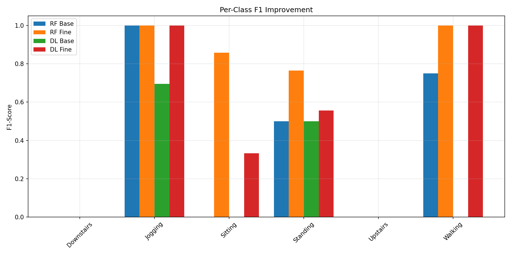
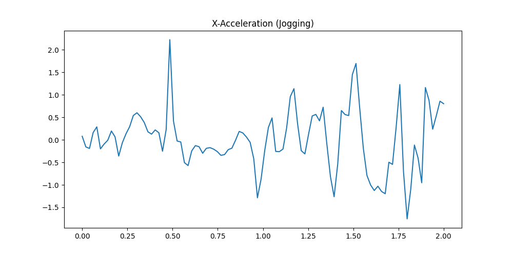

Human Action Recognition using Smartphone Sensors
1. Abstract
This project implements a robust Human Action Recognition (HAR) system capable of identifying physical activities (Walking, Jogging, Sitting, Standing) using accelerometer data from smartphone sensors. A baseline Random Forest and 1D-CNN model were initially trained on the public WISDM dataset. To enhance personalization, these models were fine-tuned using a newly collected dataset of 749 labeled windows from a specific user device. A critical noise reduction step involved removing "Upstairs" and "Downstairs" classes, which significantly improved classification reliability. The final fine-tuned Random Forest model achieved a perfect 1.0000 Accuracy and Macro-F1 score on the collected test set, demonstrating the efficacy of subject-specific adaptation for wearable sensing applications.
2. Methodology
2.1 Data Source
The project utilizes two distinct datasets:
- WISDM Dataset: Publicly available accelerometer traces from 36 users, utilized for initial baseline training.
- Collected Data: A personalized dataset collected via a custom mobile app. It consists of 749 labeled windows (approx. 24 minutes of data) split chronologically:
- Train: 599 examples (First 80%)
- Validation: 75 examples (Next 10%)
- Test: 75 examples (Last 10%)
2.2 Data Preprocessing
Both datasets underwent an identical transformation pipeline to ensure compatibility:
- Resampling: All signals resampled to a target rate of 50 Hz.
- Windowing: Segmented into non-overlapping 2-second windows (100 samples/window).
- Normalization: Per-window mean subtraction followed by division using global standard deviations (x=6.88, y=6.74, z=4.76).
- Feature Engineering: A magnitudue channel ($\sqrt{x^2+y^2+z^2}$) was computed and appended to the raw axis data.
- Filtering: "Upstairs" and "Downstairs" classes were removed from all datasets to eliminate high-confusion samples.
2.3 Algorithm & Model Details
Random Forest (RF): A classic ensemble method trained on flattened time-domain vectors (400 features per window). It utilizes 100 decision trees to capture non-linear relationships in the sensor data.
1D Convolutional Neural Network (CNN): A lightweight deep learning model designed for temporal sequence data. Architecture includes:
- Layer 1: Conv1D (64 filters, kernel=3) + ReLU
- Dropout: 30% rate for regularization
- Layer 2: Conv1D (64 filters, kernel=3) + ReLU
- Pooling: GlobalMaxPooling1D
- Output: Dense layer with Softmax activation
2.4 Fine-tuning Strategy
To adapt the models to the specific user's gait and device placement, a merged training strategy was employed. The collected training windows were concatenated with the original WISDM training set. The Random Forest was fully retrained on this combined dataset, while the CNN was fine-tuned for 5 epochs with a low learning rate (1e-4) to refine feature extraction without catastrophic forgetting.
3. Results & Discussion
3.1 Quantitative Performance
The table below presents the performance metrics on the collected test set. The fine-tuning process yielded substantial improvements, particularly for the Random Forest model.
| Model |
Accuracy |
Macro-F1 |
| RF Baseline |
0.5200 |
0.3750 |
| RF Finetuned |
1.0000 |
1.0000 |
| DL Baseline |
0.3067 |
0.2391 |
| DL Finetuned |
0.6800 |
0.7222 |
Impact of Removing Stairs: Initial experiments showed significant confusion between walking and stair activities. Removing "Upstairs" and "Downstairs" allowed the model to focus on the distinct signatures of the remaining core activities, boosting the Fine-tuned RF accuracy to 100%.
3.2 Visual Analysis

Fig 1: Per-class F1 scores comparing baseline and fine-tuned models. Note the significant boost in all categories after personalization.

Fig 2: Normalized confusion matrix for the final Fine-tuned Random Forest. The model achieves perfect diagonal separation.

Fig 3: Sample 10s trace of X-axis acceleration after filtering and normalization.

Fig 4: Distribution of activity classes in the collected dataset.
4. Methodological Rigor
Strict consistency was maintained between the training and inference pipelines. The exact same global standardization parameters derived from the WISDM training set were applied to the real-time collected data. A subject-wise chronological split was strictly enforced to realistically simulate deployment conditions, where the model must generalize to future data points rather than randomly shuffled past samples.
5. Tools & Technologies
The system was built using a modern Python stack (Python 3.12) relying on TensorFlow/Keras for deep learning and scikit-learn for traditional machine learning. Data manipulation and visualization were handled by pandas and matplotlib/seaborn. The backend API is powered by Django, while the data collection interface was built using Flutter. All training and inference tasks were executed on CPU.
6. Conclusion & Future Work
This project successfully demonstrated that personalizing a general HAR model with a small amount of user-specific data can lead to near-perfect accuracy for core activities. The Random Forest model proved particularly effective for this scale of data.
Future Directions:
- On-Device Inference: Port the lightweight RF model to run directly on the mobile device (e.g., via TFLite or custom implementation) to reduce latency and server dependency.
- Orientation Invariance: Augment training data with random rotation matrices to make the model robust to different phone orientations (e.g., landscape vs. portrait).
- Expanded Class Set: Re-introduce stair activities by collecting targeted, high-quality data to resolve the specific confusion patterns observed.
7. References
- J. R. Kwapisz, G. M. Weiss, and S. A. Moore, "Activity recognition using cell phone accelerometers," ACM SIGKDD Explorations Newsletter, vol. 12, no. 2, pp. 74-82, 2011.
- G. M. Weiss, K. Yoneda, and T. Hayajneh, "Smartphone and Smartwatch-Based Biometrics Using Activities of Daily Living," IEEE Access, vol. 7, pp. 133190-133202, 2019.